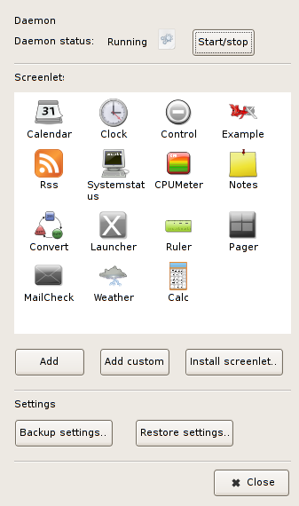
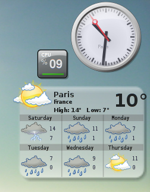

It is still under heavy development but already nice, usable and quite stable.
I have been using it for 2 weeks now, and did not get any freeze. It just does not have all the options I am sure it will get in the future.
Let’s install it. It’s a piece of cake, as always.
However, I assume that you have already installed Compiz or Beryl which are necessary to run it.
If not, please refer to one of the numerous guides on the web explaining how to do that.
I would personnally advise the official Compiz guide, because after several months of daily use and on my hardware, Compiz has proven to be far more stable than Beryl.
I don’t want to start a flame war here, but I am convinced that Beryl is not taking a good path.
So here we go for Screenlets :
Edit your /etc/apt/source.list file and add this line :
deb http://hendrik.kaju.pri.ee/ubuntu edgy screenlets
Then, add the GPG key for more safety :
$ wget http://hendrik.kaju.pri.ee/ubuntu/619A3D4E.gpg -O- | sudo apt-key add - && sudo apt-get update
Finally, you can enter in your terminal :
$ apt-get update && apt-get install screenlets
Now, you should have an icon in your Accessories menu : just click to start it.
The same icon (the one at the left side of the screenshot below, representing a computer) will show off near the clock.

Right click on it and choose settings to get this screen :

As you can see, it shows the widgets that are available currently.
To add one to your desktop, just double click on it. According to the widget, you can get more configuration options by right clicking individually on each.
Now you can play with it and dig for more tricks ! :)
For more info, don’t forget check the official web site.
Here is screenlets as it runs on my desktop :

There are the 3 most useful widgets that I found and there work very well. I am now looking forward to seeing more and more widgets and options. :)
Oh and don’t be affraid that it slows down your computer : it takes 6 Mb of memory on mine, and has no measurable impact on the CPU (and my laptop has a modest Celeron processor).
Have fun !